Trucazos para la mejor cocina de Hyrule
Por Link Linkez
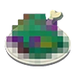
VS
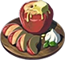
Descubre todos los secretos culinarios que Link ha aprendido en su viaje por Hyrule. Aquí encontrarás recetas deliciosas, trucos para potenciar tus platos y consejos para convertirte en un verdadero chef hyliano.
Recetas para el frio, calor y cualquier situación climatológica
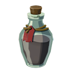
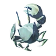
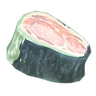
Elixires para mejorar tus estadísticas
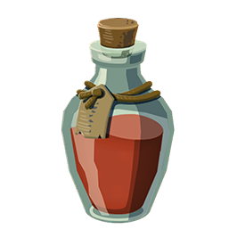
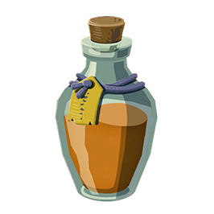
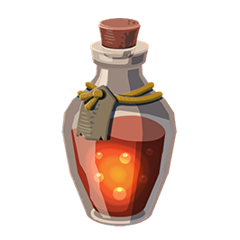
La faceta más cocinitas de Link (zelda lleva 100 añazos secuestrada en el castillo)
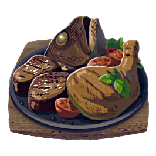
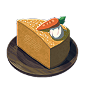
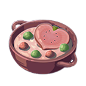